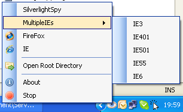

Welcome to ServerLight users community.
To use ServerLight, just copy Serverlight.exe (with WebDev.WebHost.dll if you have not Visual Studio Installed) in your WebSite Directory.

ServerLight.exe.config file is optional. Include it if you want to tweak the WebServer